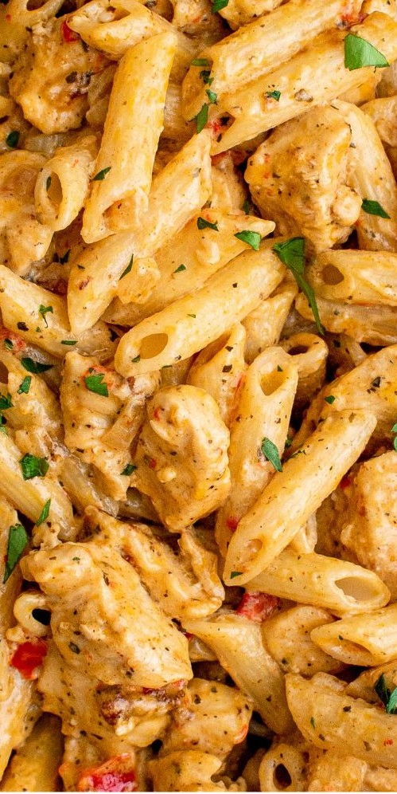

Cajun Chicken Pasta

A creamy blend of chicken, pasta, and Cajun spices
Ingredients
- 12 oz penne pasta
- 2 tablespoons butter
- 1 tablespoon olive oil
- 1 cup diced white onions
- 1 red bell pepper seeded and diced
- 4 large cloves garlic, minced
- 2 teaspoon Cajun seasoning
- 1 teaspoon dried basil
- 1 teaspoon paprika powder
- 1 teaspoon ground black pepper
- 1 teaspoon salt
- 1/4 teaspoon cayenne pepper
- 1.5 lb of boneless chicken breast
- 1 cup parmesan cheese
- 1 cup heavy cream
- 4 oz cream cheese, at room temperature
- 1/4 cup chicken broth
Preparation Instructions
- Boil 6 cups water in large pot and cook pasta to desired texture, drain, and rinse with cold water.
- Add butter, olive oil, and onion to a large pot over medium-high heat and cook for 3 to 5 minutes
- Add the bell pepper , garlic, Cajun seasoning, basil, paprika, black pepper, salt, and cayenne pepper. Stir well and cook for 3 more minutes.
- Add chicken, stir, and cook for 6 to 8 minutes.
- Add parmesan cheese, cream cheese, heavy cream, chicken broth, and cook until sauce begins to thicken
- Add cooked pasta, stir well, cook for an additional 3 minutes, and served with freshly chopped parsley on top
Home